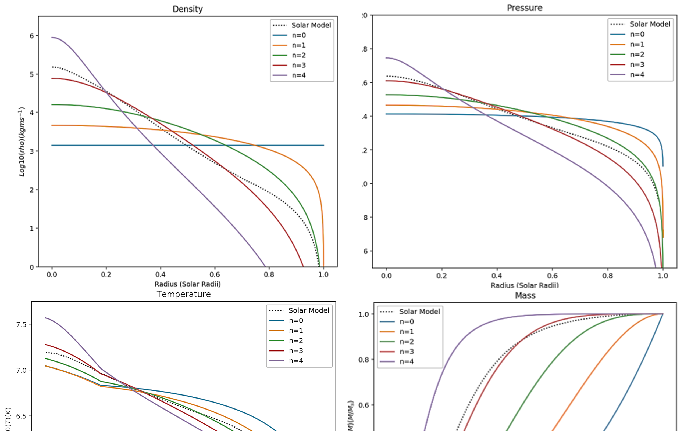

Stellar interiors

Modelling the Interior of the Sun using Polytropic Models
The mass, density, pressure, and temperature were plotted as a
function of fractional solar radius (R) for a polytropic model (PM) of
various indices and the Standard Solar Model (SSM).
In this second year project, Python and report writing skills were developed.